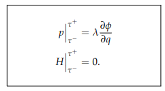
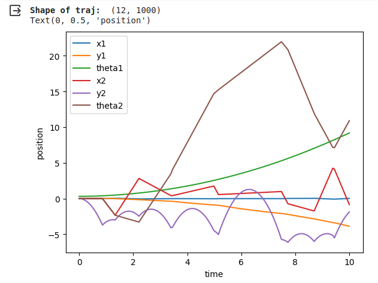

The goal of this project is to simulate a jack bouncing inside of a moving box. The drawing below shows the configuration and transformation of frames I used. For simulation, I simulate the jack starting at the center of the box with zero initial velocity and zero theta for 10 seconds with a time step of 0.01s.
Frame W is the world frame, frame A is the frame of the center of the box, frame B is the frame of the center of the jack. g_B1, g_B2, g_B3, g_B4 are the transformations from frame B to the four edges of the jack.
Lagrangian equation of the system: L = KE - V. For kinetic energy, first get the body velocity of the box by calculating their rigid body transformation to world frame. Next, convert this 4x4 matrix to a 6x1 vector and last calculate KE. (I assume the center of the mass is the center of the geometry). Last, use the same method for the jack.
$$ KE = \frac{1}{2}⋅ω^T⋅I⋅ω $$For potential energy, get the y value of the box relative to the world frame and use the same method for the jack:
$$ V = mgh $$Euler-Lagrange:
$$ \frac{∂}{∂t}\frac{∂L}{∂\dot{q}} − \frac{∂L}{∂q} = F $$The constraints: There are a total of 16 constraints for this system. They are each edge of the jack reaching the four sides of the box.
The external force: I tried different magnitudes of force, and I found the two below work best for me.
$$\ F_y = m_{box} * g *1.012$$ $$\ F_theta = m_{box} * g * 0.5$$The impact update law:
The impact happened when one edge of the jack collided with one side of the box. P is the momentum; H is the Hamiltonian of the system. After defining the 16 constraints of the system, evaluate the related expressions at $\ τ^+$ and $\ τ^−$ and solve them for $\ \dot{q}(τ+)$, and the results will be the impact update rules. With the symbolic solutions for impact update, we can numerically evaluate them and define a function for the impact update in the simulation loop.
When the simulation begins, the jack falls because of gravity. Since I give a force in the positive y direction and a rotation force to the box, the box will not fall, and the box will start rotating slowly. When the jack hits the sides of the box, it will bounce back, and the direction depends on the angle of the sides it collides. The simulation looks reasonable to me, the jack will bounce back, and the direction is related to the angle of the sides it collides. Also, since I chose the box mass to be way heavier than the jack, the collision will not affect the performance of the box. The below picture shows the change of 6 related to time. It can further prove my work is reasonable. From y2, we can clearly see where collision happened. θ2 first increasing and then decreasing is also due to the collision.
